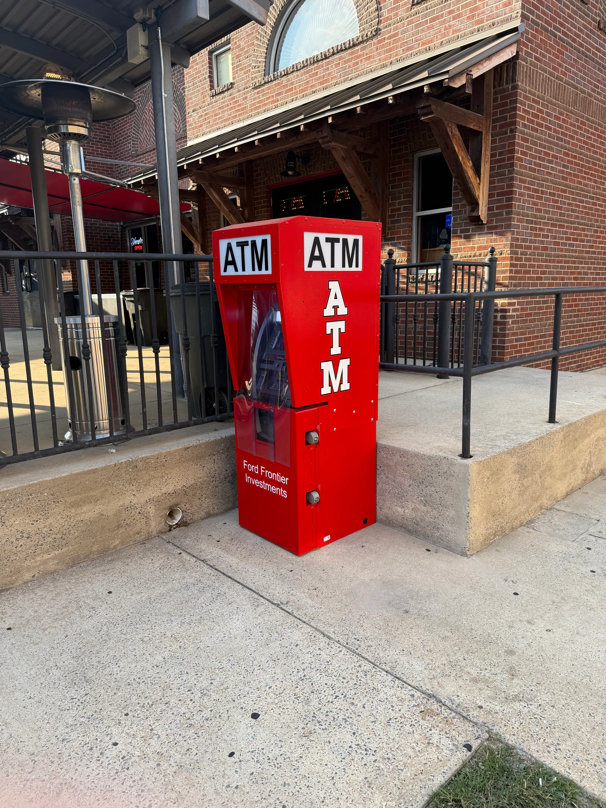

Drive-up or walk-up. FFI handles every step — permits, contractors, installation, and compliance. No cost to your property.

"Outdoor ATM" means different things to different properties. Before we talk equipment or timelines, there's one question that matters most.
The customer never leaves the car. The machine sits at lane height — on a pedestal, on an island, or mounted through an exterior wall facing the drive lane.
This is the right product if you have a dedicated vehicle lane or drive-through corridor. It captures cash demand from drivers who will not stop to park and walk in.
Best for:
The customer walks up to the machine on foot. It mounts through an exterior wall or stands inside a weatherproof outdoor kiosk.
This is the right product if you have foot traffic outside your building — or if your current indoor machine goes dark every night when you close. Walk-up outdoor captures 24/7 cash demand your indoor unit never can.
Best for:
Your customer doesn't want to park the car. They want cash in 60 seconds and a clear lane out.
Drive-up ATMs serve that exact moment. They're built for properties with dedicated drive aisles — gas station canopy corridors, strip mall outparcels, bank branch drive lanes, and high-traffic commercial pad sites.
If your location has vehicle throughput but limited walk-in foot traffic, a drive-up ATM is almost certainly the right product. If you're not sure — ask us. That's what the site survey is for.
Strip mall and shopping center owners. If you're worried about liability, here's the short answer: FFI owns the machine, owns the cash inside it, and carries the operator insurance. Your obligation is providing the space and a power source. That's it.
Beyond that — an ATM in your common area works for your tenants too. Industry research shows roughly 25% of cash withdrawn at an ATM gets spent right inside the host store. That's traffic and sales lift you're currently not capturing.
Gas station and c-store owners. Your indoor ATM goes dark when you close. A drive-up unit outside your canopy stays on.
The customer pulling in at 11pm or 5am needs cash. If your machine is inside a locked store, you're not there for that customer. A drive-up machine on your exterior wall or canopy pad captures cash demand your indoor unit can't touch — and it's a surcharge revenue line that runs while you sleep.
Commercial real estate investors and property owners. A placement agreement is not a lien. It does not encumber your title, it does not appear on a title search, and it does not affect your exit. FFI signs a standard placement agreement with a defined term and mutual termination provisions. The machine is FFI's property. When the agreement ends, the machine leaves.
What stays is the passive income line — a recurring revenue stream from your parking lot or pad site, with no operating burden on your end.
Bank branches and credit unions. If you're managing your own drive-up ATM fleet, we're not pitching you on replacing that program. Where FFI can add value is off-premise — a branded ATM at a host location near your branches, operated by FFI so your internal team carries zero service burden. If you're looking at drive-up lane modernization and want an operator who understands Alabama's permit process, we're worth a call.
Car wash and drive-through operators. A drive-up ATM doesn't share your service lane. It installs adjacent to your main corridor — typically on a pad or pedestal positioned so it draws customers without creating queue conflicts.
Your customers are already in their cars. They're already in a cash-adjacent mindset. Offering a drive-up ATM next to your tunnel exit is a natural extension — not a distraction.
This is where most operators stop talking and start being vague. FFI doesn't do that. Here's exactly what happens from first call to live machine.
FFI visits the property. We measure the drive lane, count traffic, check power access, test cellular signal, and assess sightlines for camera coverage and anti-ram positioning. We also check the city's zoning file before we show up. No surprises at permit time.
We select the right machine for your site. Drive-up units operate in Alabama's summer heat — July and August afternoon highs average 92°F in Montgomery and Tuscaloosa, with humidity running 67 to 73%. Machine selection accounts for that. High-brightness displays that are readable in direct sun. Operating temperature ranges built for Alabama summers, not Pacific Northwest ones.
FFI files the permits. City by city:
Planning a drive-up ATM in downtown Birmingham? The City of Birmingham Downtown Overlay District restricts drive-in and drive-through uses. A drive-up pedestal ATM in the urban core requires special zoning review. If your property is in or near the downtown overlay, a walk-up outdoor through-the-wall ATM is typically the faster path. Talk to us — we know how Birmingham's permit process works.
City of Birmingham Department of Planning, Engineering and Permits (PEP) — a building permit, an electrical permit, and a sign permit if applicable. The downtown overlay requires additional zoning review for drive-through facilities. All commercial construction requires a building permit per the Technical Code of the City of Birmingham.
Montgomery Inspections Department — building permit and electrical permit (only state-licensed electrical contractors can pull the electrical permit in Montgomery). Final sign-offs required from Montgomery Fire Rescue, Engineering, Traffic Engineering, and Landscaping for commercial site work.
Two separate authorities: the Office of the City Engineer for any site work or new pad, and Planning and Development Services for the building and electrical permits. Tuscaloosa's zoning code includes explicit ATM language under Section 24-349 — drive-up ATMs are treated as drive-through facility accessory uses, which means specific stacking and setback rules apply. We know them. Initial comments on commercial permits are typically provided within 10 business days.
No other ATM company operating in Alabama publishes this level of permit detail. Most are calling from out-of-state headquarters and learning your city's process after the fact. FFI operates here. We know these offices.
All electrical work is performed by Alabama state-licensed electrical contractors. FFI coordinates and pays for this. It does not come back to you.
Pad pours, pedestal anchoring, and structural framing are handled by FFI's contractor network. The machine is anchored against movement — this is a security requirement, not an aesthetic one.
Anti-ram bollards go in before the machine. Concrete-filled steel posts positioned to stop a vehicle strike. Standard on every FFI outdoor installation.
FFI uses the DPL Wireless Hercules 4G LTE cellular modem — the most reliable wireless cellular system in the ATM industry. No hardwired internet line to run. No dependence on your ISP or router. The machine connects via cellular and stays connected independently of your building's network. In a documented field trial, the Hercules achieved a 0.5% communication failure rate — nine times better than competing systems.
FFI loads the cash, configures the processor, activates the transaction network, and confirms the machine is live. Tap-to-pay available for qualifying locations.
98% uptime, documented in our remote monitoring system. FFI monitors the machine around the clock. Door-open alerts, movement alerts, dispenser status — all tracked remotely. You don't touch it. You don't call a service company. You don't reload it. FFI handles every piece of ongoing operations.
Your job throughout this entire process: Say yes, sign the agreement, and provide site access. Everything else is on us.
Alabama isn't a mild climate. It's one of the highest tornado-frequency states in the country — an average of 42 tornadoes per year — with summer temperatures and humidity that push the limits of standard machine operating ranges.
For drive-up installations, the Genmega GT5000 is FFI's anchor platform. It's a through-the-wall unit built for outdoor drive-up use: high-brightness 15-inch display readable in direct sunlight, motorized cash presenter at vehicle reach height, 3-cassette capacity for high-volume sites, and a UL 291 business-hours safe. Operating temperature range covers Alabama's summer peaks. The rear service panel is inside the building's secured space — meaning cash and electronics are never fully exposed to the exterior.
For bank-grade drive-up modernization, the Hyosung Series 7 7D (through-the-wall) and 7I (island pedestal) are available for qualifying sites.
Machine selection depends on your site. That's what the site survey determines.
In 2025, Alabama elevated ATM crime to a felony — making it the fifth state in the country to do so. That change didn't happen in a vacuum. ATM theft and skimming have risen significantly nationwide over the past several years. FFI's security requirements are a direct response to that reality — not an afterthought.
Tell us about your location. FFI will assess whether a drive-up machine fits — and if it does, we'll walk you through the exact process for your city.
Your indoor ATM closes when you close.
Every hour your store is locked, your machine is locked with it. The customer who walks by at midnight, the one who shows up at 5am, the one who needs cash on a Sunday when you're running a skeleton crew — none of them can use an indoor machine that's behind a locked door.
A walk-up outdoor ATM changes that. It mounts through your exterior wall or stands in a weatherproof outdoor kiosk, and it runs 24 hours a day whether your store is open or not.
Gas station and c-store owners. The through-the-wall format is exactly what it sounds like — the machine body installs inside the wall, and only the customer-facing fascia is exposed outdoors. The vault and all electronics stay inside your building's envelope. Your cash isn't sitting exposed outside.
The wall cutout required for a Genmega GT3000 is about 30 inches tall and 12 inches wide, and the wall needs to be less than 9.5 inches thick. Most c-store and gas station wall construction falls within that. FFI surveys the wall before committing to anything. If your wall doesn't qualify for a TTW unit, a weatherproof freestanding kiosk is the alternative. Same product — different form factor.
Strip mall and shopping center owners. We hear this concern often. Here's the honest answer:
FFI owns the machine. FFI owns the cash. FFI carries the operator-side insurance. FFI installs the bollards, the anti-skim hardware, and the security camera requirement. The machine runs 24/7 with remote monitoring.
Your existing premises liability coverage is almost always sufficient. FFI is the named operator, not you. And the ATM itself drives foot traffic to your tenants — roughly 25% of cash withdrawn at an ATM gets spent right inside the host store or nearby. An outdoor ATM in your common area is a passive income source and a tenant retention tool at the same time.
Commercial real estate investors. An outdoor ATM under a placement agreement does not encumber your title, does not appear on a title search, and does not affect a property sale. The agreement is between FFI and the property owner and transfers — or terminates — cleanly.
What it does add is a recurring revenue line from an asset that costs you nothing to operate. No staff. No inventory. No maintenance calls. The machine generates surcharge revenue and pays you a share of it monthly. It runs whether you're watching or not.
Car wash, laundromat, and 24-hour operators. Unattended sites are exactly where through-the-wall design and physical hardening matter most.
FFI installs the machine into the building wall — vault and electronics inside, customer interface outside. Anti-ram bollards in front. Anchoring to the structure. UL 291 safe. Remote monitoring around the clock.
The answer to the safety concern isn't avoiding the outdoor ATM — it's installing the right hardware in the right configuration. That's what FFI does.
Apartment communities, hotels, and event venues. Your maintenance obligation is zero.
FFI owns the machine, loads the cash, monitors uptime, and handles all service calls. You get a permanent amenity — or an event-ready cash access point — with no ongoing responsibility. If the machine goes down, FFI's remote monitoring system flags it. You don't need to call anyone. Tap-to-pay available for qualifying locations, so cardholders who use digital wallets aren't excluded.
Municipal and government property managers. FFI's outdoor installations are built to ADA 2010 Standards Section 707.
That means a 30-inch by 48-inch clear floor space with a 36-inch-wide accessible route. Operable parts no higher than 48-inch forward reach. Speech output via 3.5mm audio jack. Tactile input keys. Braille speech-mode instructions. All electrical work is performed by Alabama state-licensed electrical contractors. FFI coordinates, schedules, and pays for that work. You receive a completed installation that meets federal accessibility requirements and state contractor licensing standards.
Walk-up outdoor installs involve more steps than an indoor placement. Wall cutouts, structural work, weatherproofing, anchoring, bollards, permits. FFI handles every one of them.
FFI visits the property. We check wall depth and construction for TTW qualification (or assess the pad site for a freestanding kiosk). We test cellular signal, audit power access, check pedestrian sightlines and lighting, and assess camera coverage. We pull up the city's zoning record before arrival.
We match the machine to your site. Alabama's climate requires deliberate equipment selection. July and August afternoon highs average 92°F across our service markets. Humidity runs 67 to 73% through summer. And Alabama averages 42 tornadoes per year. We don't pick equipment from a catalog — we pick equipment for this state.
The Genmega GT3000 is FFI's primary through-the-wall platform for walk-up outdoor. Weather-resistant housing. UL 291 business-hours safe. Wall cutout: 30.5 inches tall, 12.5 inches wide, max wall thickness 9.5 inches.
The Genmega Onyx-W is the wall-mount option for sites where TTW isn't possible — a fully ADA-compliant wall-mounted unit with a 10.1-inch screen and lighted touch keys.
The Hyosung Halo II (MX 2600SE) is available for higher-volume sites: 10.1-inch LCD, enhanced break-in protection above the UL 291 baseline, PCI 3.0 compliant keypad, and an operating temperature range up to 104°F — the widest ceiling of any standard outdoor walk-up unit.
If your site needs higher cash capacity, the Hyosung MX5300CE supports up to 8,000 notes across four cassettes. Freestanding outdoor kiosks are available for sites where wall installation isn't possible.
FFI files the permits by city:
City of Birmingham Department of Planning, Engineering and Permits (PEP). Building permit, electrical permit, and sign permit if applicable. The Birmingham Sign Ordinance requires review for any illuminated topper or branded fascia facing public right-of-way.
Montgomery Inspections Department. Building permit plus separate electrical permit — only state-licensed electrical contractors can pull the electrical permit in Montgomery. Final sign-offs from Montgomery Fire Rescue, Engineering, Traffic Engineering, and Landscaping are required for commercial site work.
Two separate authorities. The Office of the City Engineer handles any site work involving earth-moving, new pads, or parking lot changes. Planning and Development Services handles the commercial building and electrical permits. Initial comments on commercial permit applications are provided within approximately 10 business days.
Alabama state-licensed electrical contractor. FFI coordinates and pays for the work. You don't source the contractor. You don't manage the schedule. You don't receive the invoice.
For TTW units: FFI's contractor cuts the wall opening to spec, frames it, and installs the machine and weather seal. For freestanding kiosks: FFI pours or prepares the concrete pad.
Anti-ram bollards go in before the machine is live. Concrete-filled steel posts. Positioned to protect the machine face from vehicle impact without obstructing the customer approach.
DPL Wireless Hercules 4G LTE cellular modem — the most reliable wireless system in the ATM industry. No hardwired line. No ISP dependency. In a documented field trial, the Hercules achieved a 0.5% communication failure rate against a 4.5% rate for competing modems — that's a 9× performance advantage. FFI runs every outdoor ATM on this system. It's not a cost-cutting choice. It's the right engineering decision.
FFI loads the cash, configures the transaction network, and confirms the machine is live. Tap-to-pay available for qualifying locations.
98% uptime, documented in remote monitoring. FFI monitors 24/7 — door-open alerts, movement alerts, dispenser status. Cash loading handled by FFI. Service calls handled by FFI. You do nothing after the machine goes live except receive your monthly revenue share.
Your job throughout this entire process: Say yes, sign the agreement, provide site access. Everything else belongs to FFI.
The machines FFI selects for outdoor walk-up installations are chosen for this specific climate. Not for ideal conditions. For Alabama.
Summer temperatures in our service markets regularly exceed 90°F with high humidity. Alabama is among the highest tornado-frequency states in the country. Equipment that isn't spec'd for those conditions will fail — not if, when.
Every walk-up outdoor machine FFI installs has an operating temperature ceiling that exceeds Alabama's recorded summer highs, is rated for the humidity levels common across Birmingham, Montgomery, and Tuscaloosa, is anchored against movement from wind load and physical impact, and has weatherproofing at the wall interface (for TTW units) or within the enclosure design (for kiosks).
If your site is on a western-facing wall with no shade, FFI will flag that in the site survey and spec accordingly — high-brightness display, canopy recommendation if necessary, or an enclosure with supplemental cooling.
Alabama elevated ATM crime to a felony in 2025, making it the fifth state in the country to do so. The law reflects a real trend — ATM theft and skimming events have increased significantly nationwide over the past several years. FFI's security standards aren't performative. They're a direct response to what's happening in the field.
Tell us about your property. We'll assess wall depth, power, cellular signal, and city permits — and give you a straight answer on whether a walk-up outdoor ATM makes sense for your site.
Every national ATM company will tell you they're turnkey. They say they handle everything. Ask them who pulls the building permit in Tuscaloosa and watch the call go quiet.
FFI is different in four specific ways.
Birmingham's PEP office. Montgomery's Inspections Department. Tuscaloosa's dual-authority permit path through the Office of the City Engineer and Planning and Development Services. We've mapped every one of these processes. We know the forms, the review timelines, and the sign-off chain — because this is the only market we operate in.
FFI owns the machine. FFI owns the vault cash. FFI carries the operator insurance. FFI signs the permit applications and employs the licensed contractors. When something needs to be fixed, FFI fixes it. Your obligation begins and ends with providing space and a power source.
Every outdoor ATM FFI deploys runs on DPL Wireless Hercules 4G LTE cellular. In a documented field trial, the Hercules achieved a 0.5% communication failure rate — nine times better than competing systems. That's why FFI's documented uptime sits at 98%. The equipment choice and the uptime number are directly connected.
FFI is headquartered in Birmingham, Alabama. We serve Birmingham, Montgomery, and Tuscaloosa and the surrounding areas. When something needs attention, we respond. There's no national dispatch queue. There's no out-of-state service call center. We're here.
Outdoor ATM installation is a more complex process than putting a machine inside your lobby. It involves city permits, licensed electrical contractors, concrete work, structural anchoring, weatherproofing for Alabama's climate, and ongoing 24/7 monitoring. FFI has built that process from the ground up for this state. If you're evaluating outdoor ATM placement, we're the right call.
FFI also offers merchant services to qualifying locations — ask about our Rate Tracker program when you contact us. And if you currently own ATMs and are looking to exit, visit our sell your ATM page or our ATM route acquisition page.
A drive-up ATM is designed for customers who stay in their vehicles. It's mounted at lane height — on a pedestal, an island, or through an exterior wall facing a drive corridor. A walk-up outdoor ATM is designed for pedestrians. It mounts through an exterior wall or stands in a weatherproof outdoor kiosk, and the customer approaches on foot.
They serve different audiences, require different equipment, and involve different installation requirements. FFI treats them as separate products and will recommend one or the other based on your specific property.
Nothing. FFI owns the machine, covers the installation — including permits, licensed electrical contractors, concrete work, bollards, and all hardware — and absorbs every ongoing cost. The machine is FFI's asset, not yours.
FFI earns revenue through ATM surcharge fees. The property owner receives a share of that surcharge revenue each month. Your cost is zero.
It depends on the city. In Birmingham, the City of Birmingham Department of Planning, Engineering and Permits requires a building permit and an electrical permit, and a sign permit if the installation includes signage facing public right-of-way. In Montgomery, the Montgomery Inspections Department handles building and electrical permits, with additional sign-offs required from Fire Rescue, Engineering, and Traffic Engineering. In Tuscaloosa, the permit path runs through two separate offices — the Office of the City Engineer for site work and the Planning and Development Services department for the building and electrical permits.
FFI files all permits and manages all approvals as part of the standard installation process.
The realistic range is 4 to 10 weeks from the first conversation to a live machine. Permit review timelines vary by city — Tuscaloosa provides initial comments within approximately 10 business days, while Birmingham and Montgomery typically run 2 to 6 weeks for commercial permits. Electrical and concrete work adds 1 to 3 additional weeks. FFI begins the permit process as early as possible in the project timeline to avoid delays.
FFI owns the machine and carries the operator insurance. FFI installs the bollards, the anti-skim hardware, and the security camera requirement — and monitors the machine 24/7. Your existing premises liability coverage is the same coverage that covers the rest of your property. You are not the operator of the ATM. FFI is. That distinction matters from a liability standpoint.
If you have specific insurance concerns, your commercial property insurer can confirm what your existing coverage addresses.
It depends on your wall depth and construction. The Genmega GT3000 through-the-wall unit requires a wall opening of approximately 30.5 inches tall and 12.5 inches wide, and a maximum wall thickness of 9.5 inches. Most standard commercial wall construction falls within this range. FFI surveys the wall before any commitment.
If your wall doesn't qualify for a TTW unit, a weatherproof freestanding kiosk is a viable alternative that achieves the same 24/7 outdoor access without a wall cutout.
FFI's remote monitoring system tracks machine status 24 hours a day. Door-open alerts, movement alerts, dispenser status, and communication failures are all flagged immediately. FFI's documented uptime is 98% — tracked in our remote monitoring system.
When a machine goes down, FFI dispatches service. You don't call anyone. You don't manage the repair. That responsibility belongs entirely to FFI.
There is no statewide Alabama statute specifically governing outdoor ATM placement — local city authority controls the process. Tuscaloosa is notable for having explicit ATM language in its zoning code: Section 24-349 treats ATMs as drive-through facility accessory uses, which creates specific stacking and setback requirements for drive-up configurations. Birmingham's Downtown Overlay District restricts drive-in and drive-through uses, which affects drive-up pedestal ATM placement in the urban core.
All outdoor ATMs must comply with ADA 2010 Standards Section 707, including clear floor space, accessible route, operable part height, and speech output requirements. FFI builds every installation to meet these standards.
Yes. An indoor machine and an outdoor machine serve different customers. Your indoor ATM reaches customers who walk inside during business hours. An outdoor walk-up or drive-up ATM reaches customers who can't — or won't — come in, and who need cash outside your operating hours. Many properties run both.
Under ADA 2010 Standards, an indoor ATM and an outdoor ATM at the same location are considered separate locations, each of which must independently meet accessibility requirements. FFI installs outdoor units to full ADA compliance as standard.
Tell us about your property. FFI will review your location, assess which product fits — drive-up or walk-up — and walk you through the permit process for your city. No pressure. No obligation. Just a straight answer.